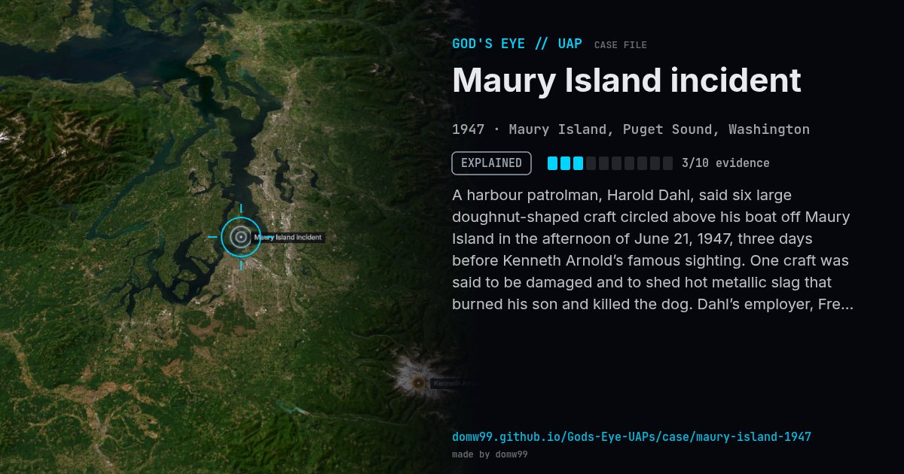

Maury Island incident

A harbour patrolman, Harold Dahl, said six large doughnut-shaped craft circled above his boat off Maury Island in the afternoon of June 21, 1947, three days before Kenneth Arnold’s famous sighting. One craft was said to be damaged and to shed hot metallic slag that burned his son and killed the dog. Dahl’s employer, Fred Crisman, backed the story, and the case was investigated by Kenneth Arnold and by two Army Air Forces intelligence officers. It is remembered as one of the first reported UFO hoaxes, and for the first story of a “man in black” silencing a witness.
Explanation
Investigators judged it a hoax: the “debris” was ordinary slag and rock, and the photographs showed nothing. The two men involved later gave conflicting accounts.
What was seen
Shape: Six doughnut-shaped craft, one said to be damaged
Witnesses: Harold Dahl, his son and a colleague, Fred Crisman (claimed)
Duration: A few minutes